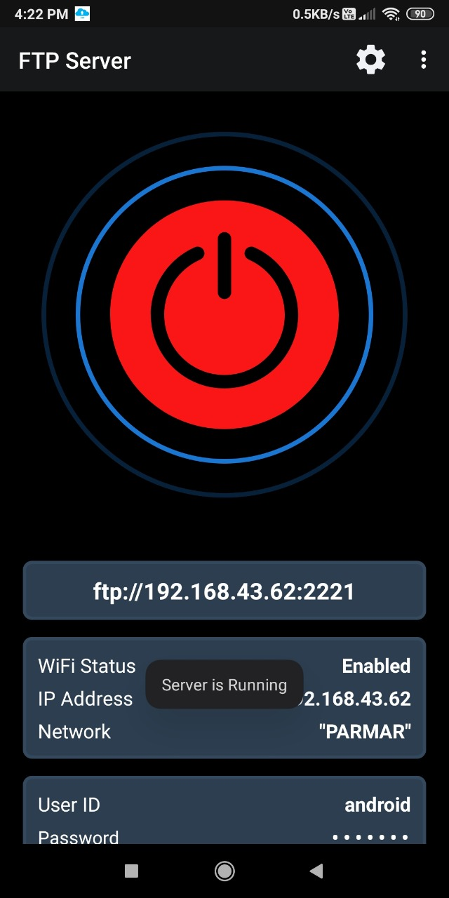
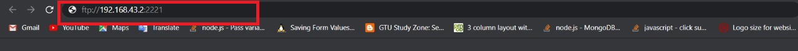
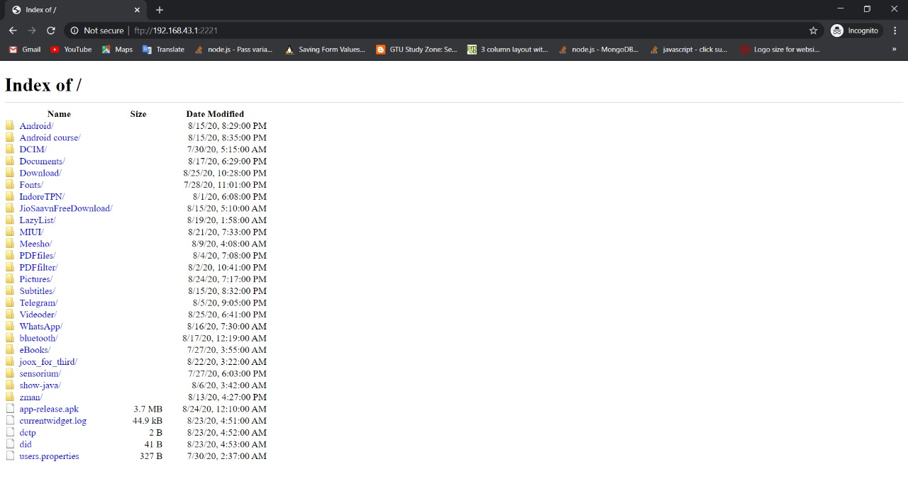
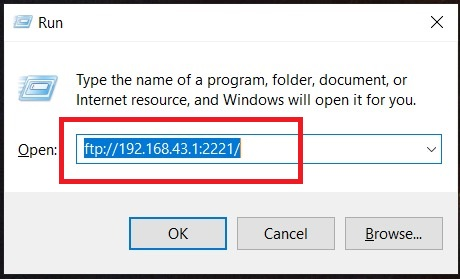

Method For Using FTP Server :
common Steps: For Using FTP Server (Application)

Step: 2
After Downloading FTP Server Press on Start Button. Than in Just Second Server is Started and Shows the Link or URL or Link.
Method 1: Using The Browser
Step: 1
Open Any Browser Than Enter The Link or Url or Link Which is Show on FTP Server (Application) Than Just Press Enter.
Step: 2
All Files Shown on Browser Window Which is in your Mobile. You Can also set the Directory to Show on Broswer.
Method 3: Using The Run
Step: 1
Open Run from Start Menu or (Win + R) Shortcut Key.Than Enter The Link or Url Which is Show on FTP Server (Application). Press Enter so you are Redirected to any Browser Window or File Explorer
Step: 2
All Files Shown on File Explorer Window or Broswer Window Which is in your Mobile. You Can also set the Directory to Show on Broswer.